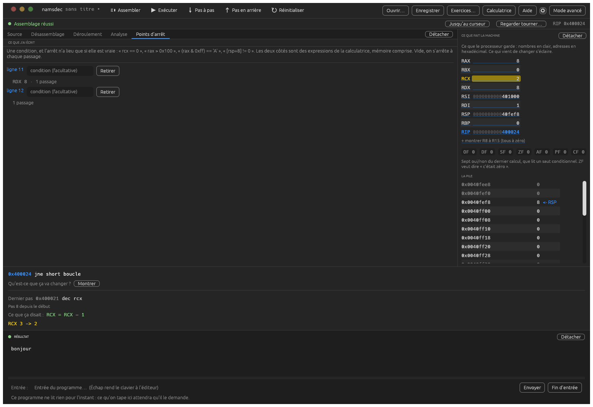

namsdec
Un atelier pour apprendre l'assembleur NASM x86-64 — et pour lire les binaires des autres.
Il exécute votre programme instruction par instruction et vous dit, à chaque pas, ce que la machine est sur le point de faire et ce qu'elle vient de faire. Il ne se contente pas d'afficher des registres : il explique. Linux, ELF64, syntaxe NASM. Licence MIT.

Ce qu'il montre que les autres ne montrent pas
L'instruction suivante, résolue
mov al, [rsi + rcx*4 + 8] ne dit pas où ça pointe.
namsdec le calcule avant l'exécution : l'adresse effective, son étiquette dans
votre source, et l'octet qui s'y trouve.
Le dernier pas, avec la valeur d'avant
RCX 0x5 → 0x4 sous le dec rcx qui l'a fait, et les
indicateurs modifiés à côté. Après un cmp, ce sont eux le résultat.
Le saut, avant qu'il parte
« Le saut sera pris », la règle qu'il suit (CF = 0 et ZF = 0), et
si la comparaison lit ses nombres comme signés. ja et jg
disent tous deux « plus grand » et répondent l'inverse.
L'appel système en clair
syscall ne porte aucun opérande — tout est dans les registres.
namsdec l'écrit comme on l'écrirait en C.
write(fd = 0x1, buf = 0x402000 → "salut\n", count = 0x6)Apprendre
Prévoir avant d'avancer. Dire ce que fait l'instruction suivante avant qu'on appuie, c'est donner la réponse avant la question : on n'a jamais l'occasion de se tromper, or se tromper est la seule façon de savoir qu'on n'avait pas compris. En mode débutant, la réponse attend le pas.
Prochaine instruction
0x400005 mov ebx, 2
Qu'est-ce que ça va changer ? [Montrer]
Dernier pas 0x400000 mov eax, 1
Ce que ça disait : EAX = 1
RAX 0x0 -> 0x1Cent trente-huit exercices sont livrés avec le programme, en quatre
paliers : Découverte, Pratique, Structures, Maîtrise. Chacun porte sa fiche de
théorie — ni la consigne, ni l'indice : la mécanique sur laquelle il repose, avec un
exemple chiffré pris sur son propre programme. Cent douze portent un but vérifiable
(rax == 0xf), et chacun un budget d'instructions : l'égaler est normal,
descendre en dessous est le vrai exercice.

rcx == 0), et ce que valent les registres à ce passage-là.
Lire les binaires des autres
Le même atelier ouvre un ELF qu'on n'a pas écrit, et en dit ce qu'il sait : ses protections, ce qu'il emprunte, ce qu'il cache, et par où commencer à le lire. Rien n'est additionné en score — un score donnerait l'illusion d'un verdict, et c'est le lecteur qui conclut.


call
vise est une fonction, même dépouillée de son nom ; celle qui est appelée de
partout est celle par laquelle on commence.Et sans la fenêtre. namsdec-cli écrit le même rapport
en Markdown, et compare deux versions d'un binaire — une protection qui disparaît,
une chaîne qui apparaît. Un diff d'octets dirait « le fichier a changé
à l'offset 0x15604 », ce qui n'apprend rien.
namsdec-cli programme.v2 --contre programme.v1 -s protections \
|| echo "une protection a bougé"Installer
Il faut Rust (cargo), nasm et
ld (binutils). Rien n'est écrit hors de $HOME, et rien
ne demande les droits d'administrateur.
git clone https://github.com/fredza/namsdec.git
cd namsdec
./install.shRelancer le script est une mise à jour, pas une réinstallation : vos réglages, vos séries et vos points d'arrêt restent où ils sont. Le guide en PDF reprend tout cela en détail, et il est produit depuis le dépôt — la version, le nombre d'exercices et la table des raccourcis viennent des sources, jamais d'une copie qui vieillirait.